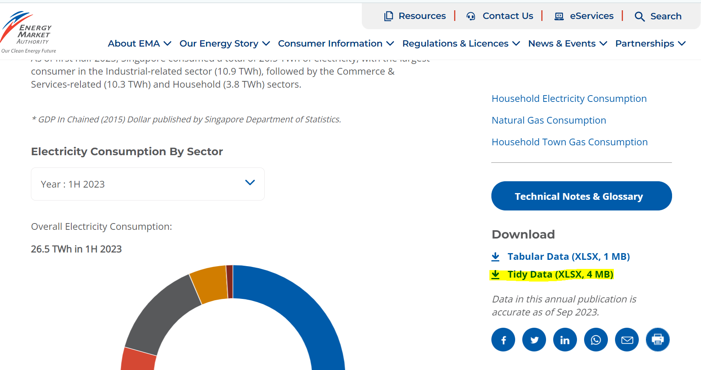
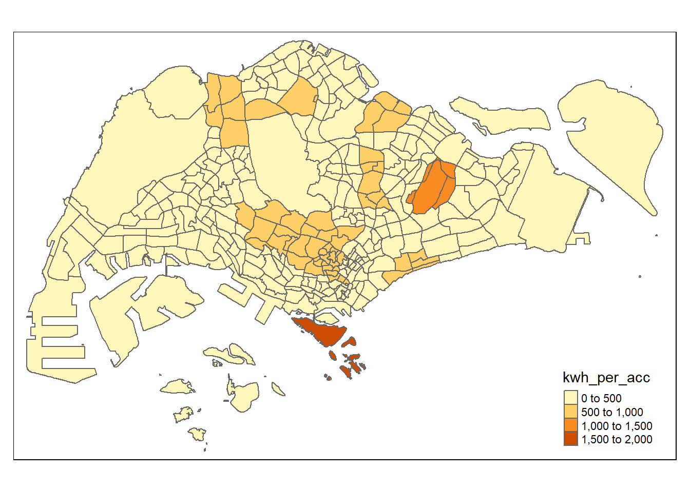
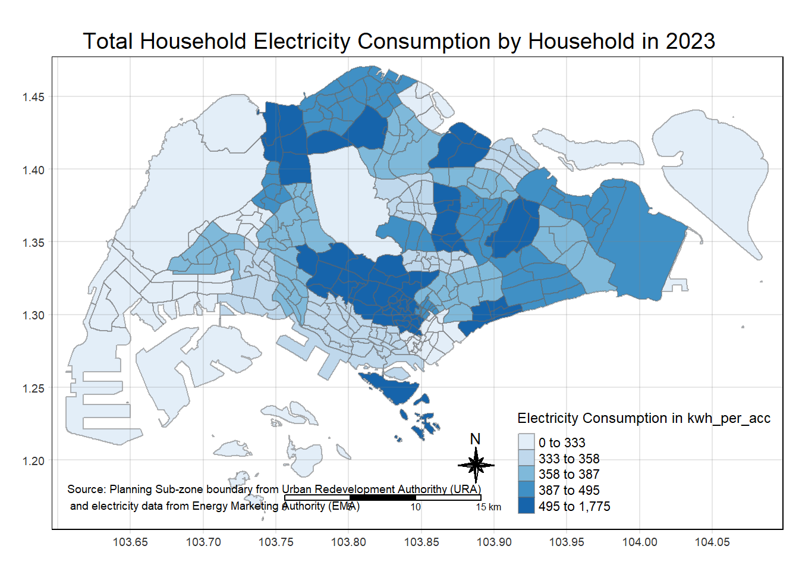

pacman::p_load(sf, readxl, tmap, tidyverse)Take-Home Exercise 4
1 Overview
In this take-home exercise, I will be selecting one of the modules of my team’s project proposed Shiny application. I will be working on storyboard 3: Geospatial Visualisation.
2. Setting the Analytical Tools
3. Data Preparation
3.1 The data
The first dataset will from Energy Market Authority. I am using the tidy data.

The second dataset will be Master Plan 2019 Subzone Boundary (Web) (i.e.
MP14_SUBZONE_WEB_PL) in ESRI shapefile format. It can be downloaded at data.gov.sg This is a geospatial data. It consists of the geographical boundary of Singapore at the planning subzone level. The data is based on URA Master Plan 2019.The third dataset will be population data
3.2 Data Import and Preparation
3.2.1 Importing Geospatial Data into R
mpsz <- st_read(dsn = "data/geospatial",
layer = "MPSZ-2019")Reading layer `MPSZ-2019' from data source
`C:\czx0727\ISSS608-VAA\take_home_ex\take_home_ex04\data\geospatial'
using driver `ESRI Shapefile'
Simple feature collection with 332 features and 6 fields
Geometry type: MULTIPOLYGON
Dimension: XY
Bounding box: xmin: 103.6057 ymin: 1.158699 xmax: 104.0885 ymax: 1.470775
Geodetic CRS: WGS 84mpszSimple feature collection with 332 features and 6 fields
Geometry type: MULTIPOLYGON
Dimension: XY
Bounding box: xmin: 103.6057 ymin: 1.158699 xmax: 104.0885 ymax: 1.470775
Geodetic CRS: WGS 84
First 10 features:
SUBZONE_N SUBZONE_C PLN_AREA_N PLN_AREA_C REGION_N
1 MARINA EAST MESZ01 MARINA EAST ME CENTRAL REGION
2 INSTITUTION HILL RVSZ05 RIVER VALLEY RV CENTRAL REGION
3 ROBERTSON QUAY SRSZ01 SINGAPORE RIVER SR CENTRAL REGION
4 JURONG ISLAND AND BUKOM WISZ01 WESTERN ISLANDS WI WEST REGION
5 FORT CANNING MUSZ02 MUSEUM MU CENTRAL REGION
6 MARINA EAST (MP) MPSZ05 MARINE PARADE MP CENTRAL REGION
7 SUDONG WISZ03 WESTERN ISLANDS WI WEST REGION
8 SEMAKAU WISZ02 WESTERN ISLANDS WI WEST REGION
9 SOUTHERN GROUP SISZ02 SOUTHERN ISLANDS SI CENTRAL REGION
10 SENTOSA SISZ01 SOUTHERN ISLANDS SI CENTRAL REGION
REGION_C geometry
1 CR MULTIPOLYGON (((103.8802 1....
2 CR MULTIPOLYGON (((103.8376 1....
3 CR MULTIPOLYGON (((103.8341 1....
4 WR MULTIPOLYGON (((103.7125 1....
5 CR MULTIPOLYGON (((103.8472 1....
6 CR MULTIPOLYGON (((103.8987 1....
7 WR MULTIPOLYGON (((103.7235 1....
8 WR MULTIPOLYGON (((103.76 1.21...
9 CR MULTIPOLYGON (((103.8591 1....
10 CR MULTIPOLYGON (((103.8232 1....3.2.2 Importing Attribute Data into R
SES_2 <- read_excel("data/SES_Public_2023_tidy.xlsx", sheet = "T3.5")str(SES_2)tibble [70,706 × 6] (S3: tbl_df/tbl/data.frame)
$ dwelling_type: chr [1:70706] "1-room / 2-room" "1-room / 2-room" "1-room / 2-room" "1-room / 2-room" ...
$ year : num [1:70706] 2005 2005 2005 2005 2005 ...
$ month : chr [1:70706] "1" "1" "1" "1" ...
$ Region : chr [1:70706] "Central Region" "Central Region" "Central Region" "Central Region" ...
$ Description : chr [1:70706] "Bishan" "Bukit Merah" "Central Region" "Geylang" ...
$ kwh_per_acc : num [1:70706] 105 141 136 148 116 ...I will keep to 2023, and overall with annual data
SES_2_1 <- SES_2 %>%
filter(year == 2023, month == "Annual", dwelling_type == "Overall", Description != "Central Region", Description != "North Region", Description != "North East Region",Description != "Overall", Description != "West Region")Convert areas to upper case.
SES_2_1 <- SES_2_1 %>%
mutate_at(.vars = vars(Description),
.funs = funs(toupper))3.2.3 Creating a sf data frame from an aspatial data frame
mpsz_SES <- left_join(mpsz, SES_2_1,
by = c("PLN_AREA_N" = "Description"))I will remove rows with NA.
mpsz_SES_filtered <- mpsz_SES %>%
mutate(kwh_per_acc = coalesce(kwh_per_acc, 0),dwelling_type = coalesce(dwelling_type, "NA"))%>%
select(dwelling_type,kwh_per_acc, geometry) 4 Selection of data visualisation techniques used
Since this is related to geospatial, choropleth map will be used. A key aspect will be the appropriate number of classes to be used.
4.1 Colour
In terms of colour, I should avoid multiple colours as it will cause confusion to readers. I should stick with a single hue (or a small set of closely related hues) and vary intensity from pale colours for low values to increasingly darker and brighter colours for high values.
4.2 Graph Title
Interesting insight from the graph can be put as a main title. The graph title can be interesting to grab the attention of readers.
4.3 Legend
Legend will need to be clear to indicate the range and what it entails.
5 Preliminary Visualisation
tmap_mode("plot")
tmap_options(check.and.fix = TRUE)
qtm(mpsz_SES_filtered,
fill = "kwh_per_acc")
tm_shape(mpsz_SES_filtered)+
tm_fill("kwh_per_acc",
style = "quantile",
palette = "Blues",
title = "Electricity Consumption in kwh_per_acc") +
tm_layout(main.title = "Total Household Electricity Consumption by Household in 2023",
main.title.position = "center",
main.title.size = 1.2,
legend.height = 0.45,
legend.width = 0.35,
frame = TRUE) +
tm_borders(alpha = 0.5) +
tm_compass(type="8star", size = 2) +
tm_scale_bar() +
tm_grid(alpha =0.2) +
tm_credits("Source: Planning Sub-zone boundary from Urban Redevelopment Authorithy (URA)\n and electricity data from Energy Marketing Authority (EMA)",
position = c("left", "bottom"))